When SMBs deal with multi-currency transactions across borders, their
finances become increasingly complex. To provide business certainty to
larger companies, banks provide hedging services. Grain believes SMBs
should access affordable services tailored to their financial needs on a
simple, seamless, and accessible platform.
Client | Grain
Art Director | Inbal Lapidot Vidal
Brand Designer, Illustrator | Anastasia Vlasenko
 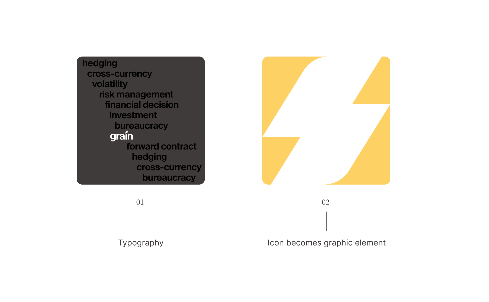
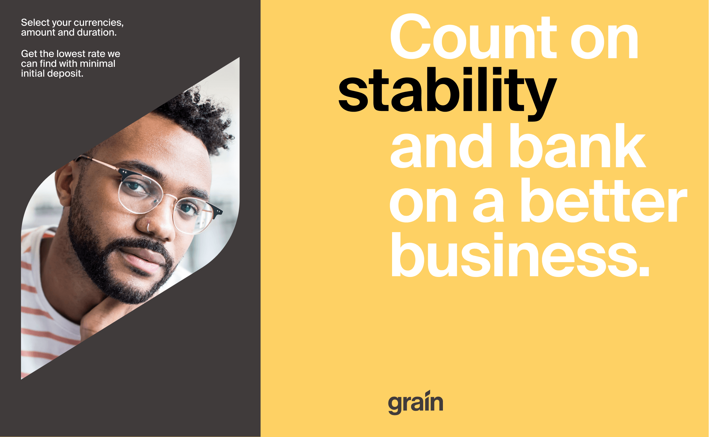
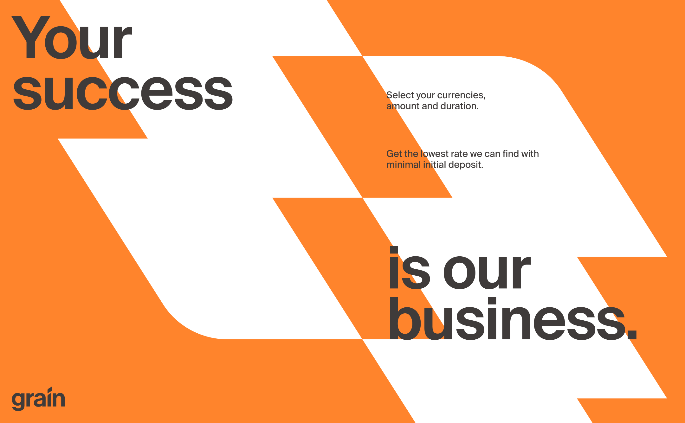
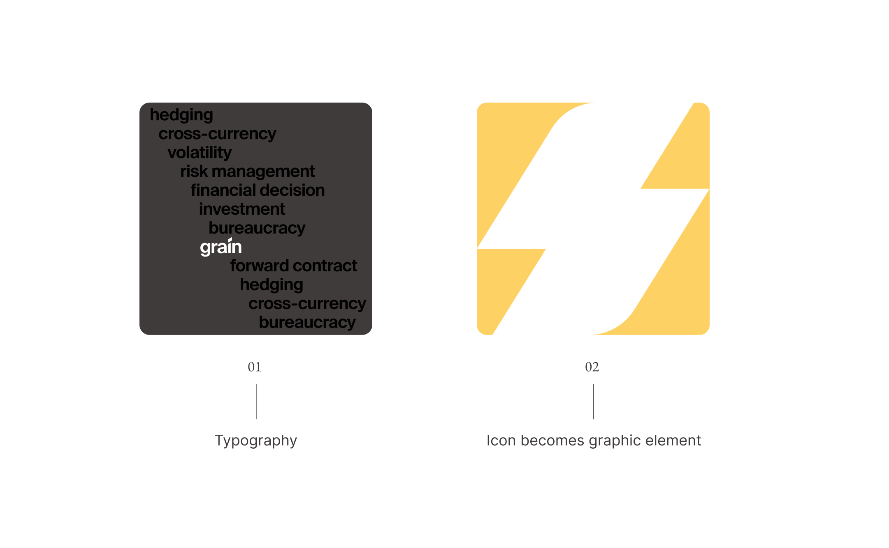
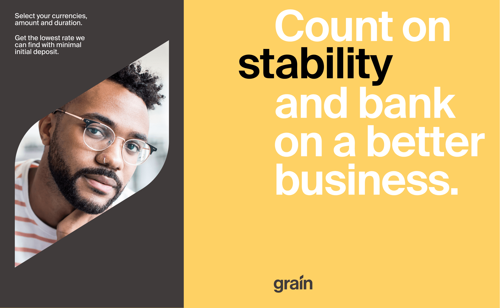
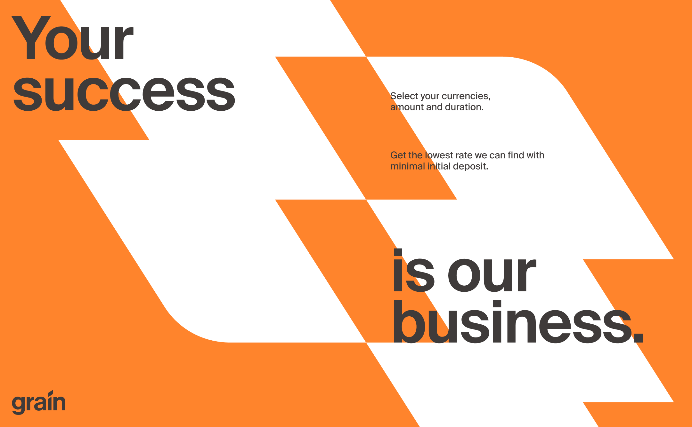
 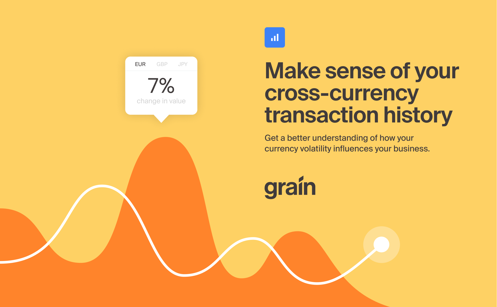
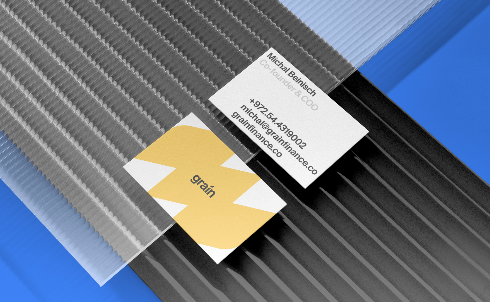
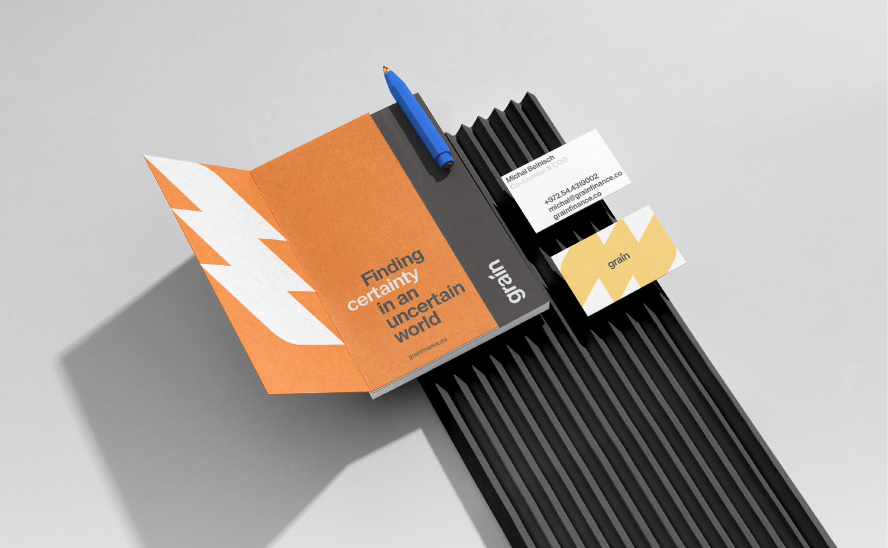
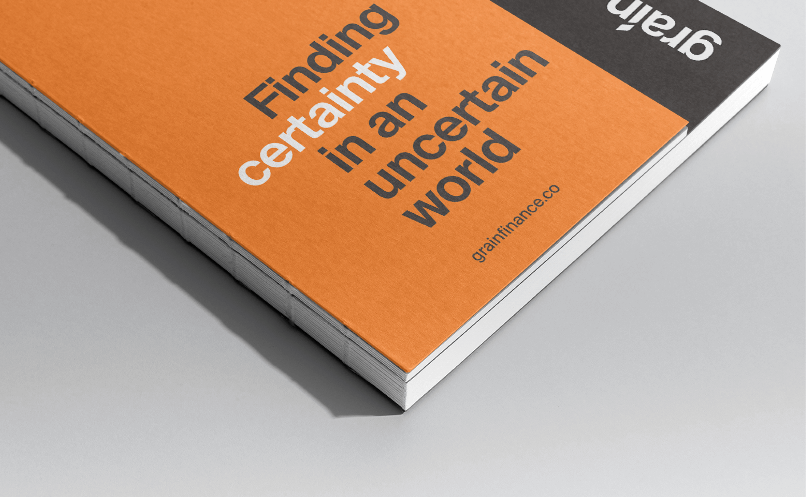
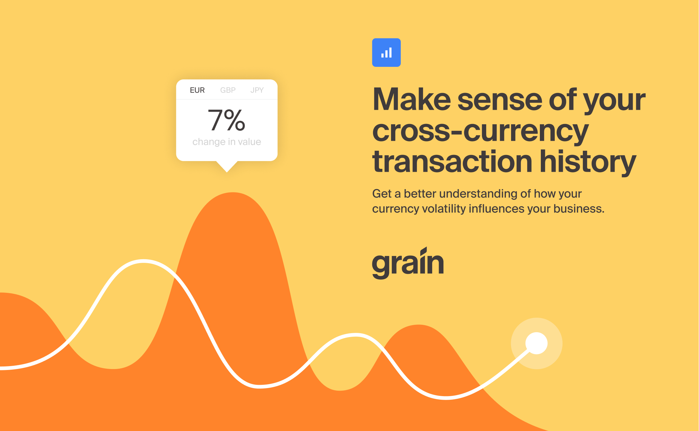
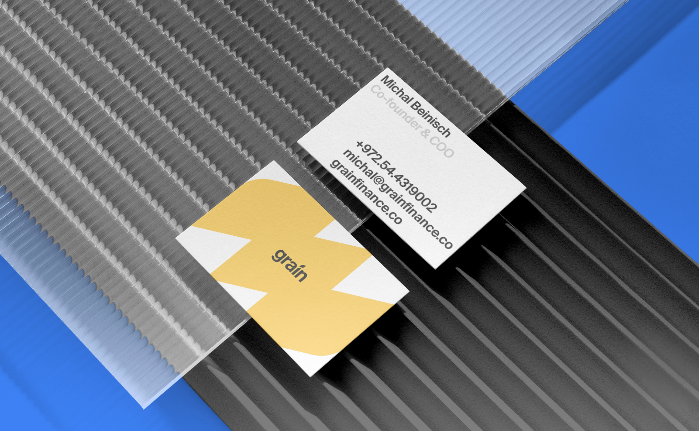
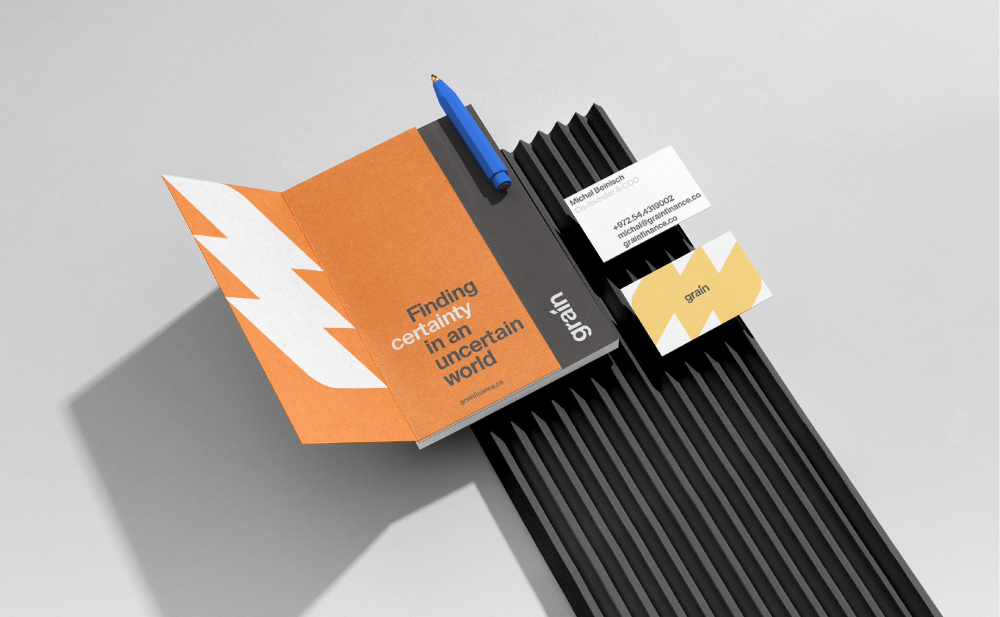
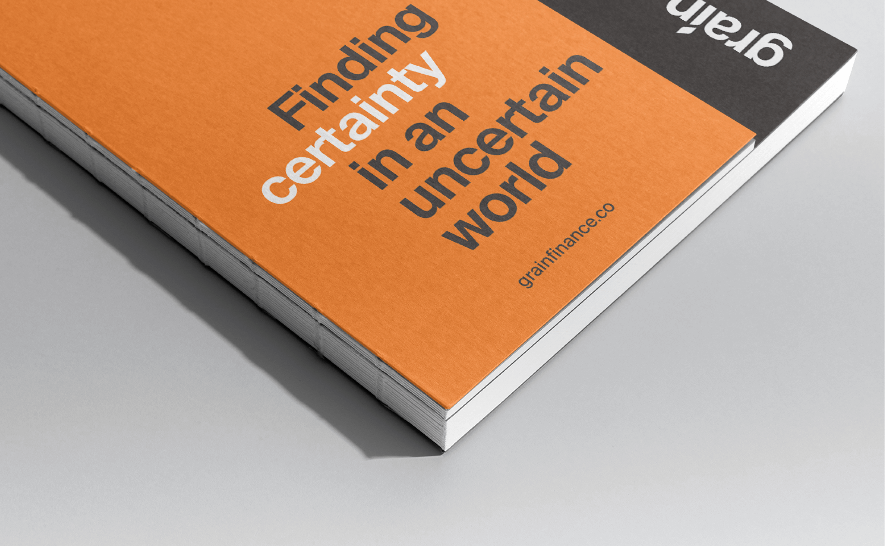

 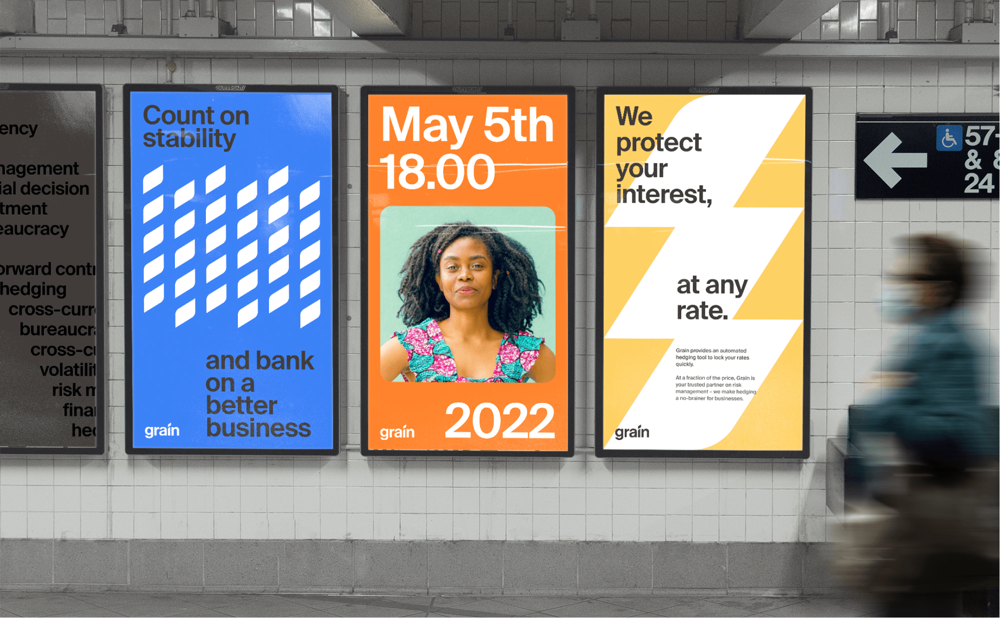
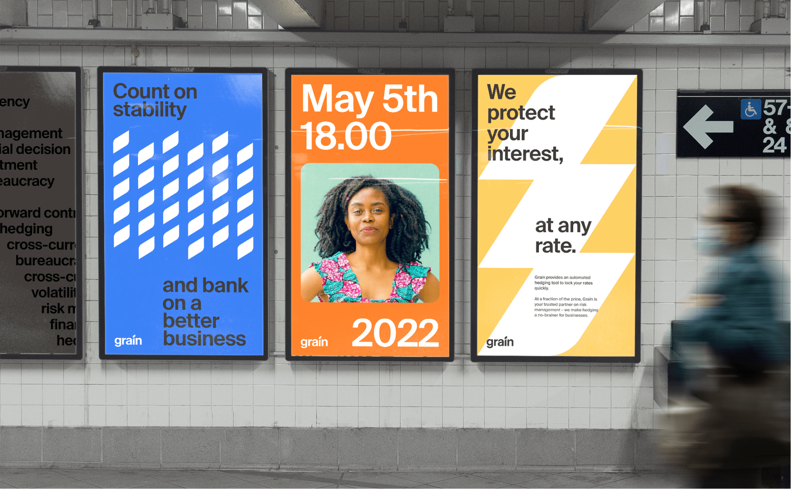